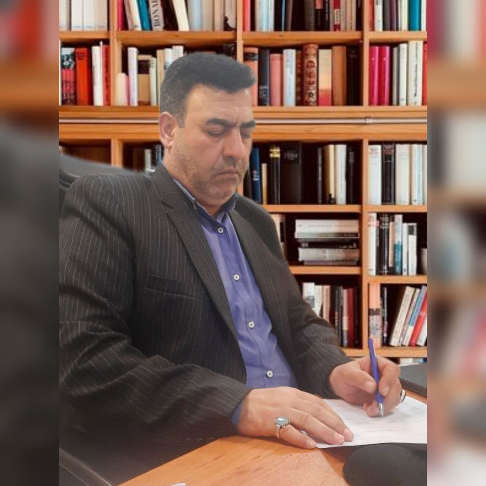
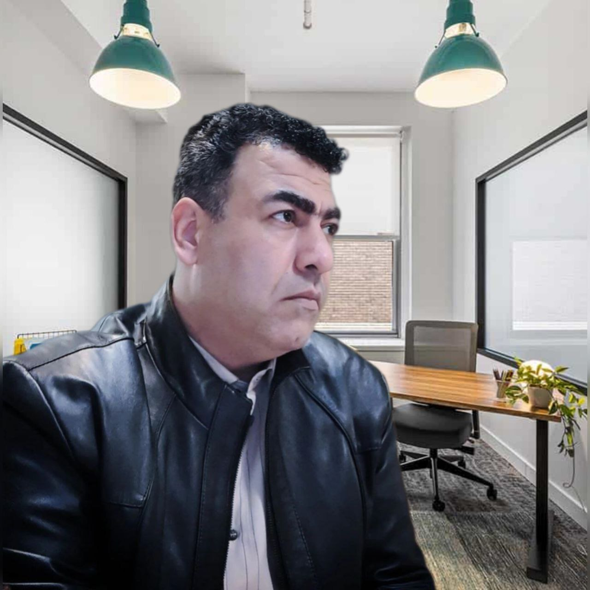
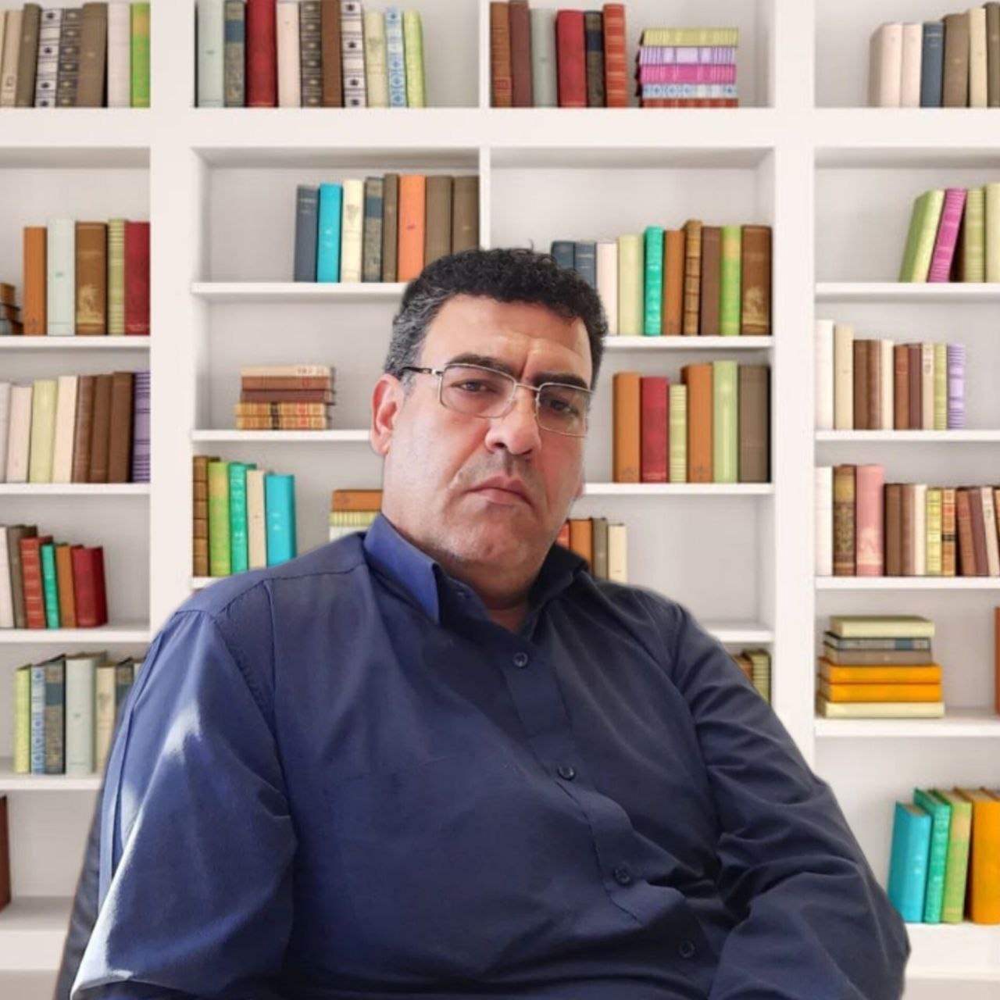

: گالری تصاویر






دانشآموخته رشته مهندسی محیط زیست با گرایش کاهش آلایندهها، متخصص در شناسایی، کنترل و کاهش آلایندههای هوا، آب و خاک است. این رشته با هدف حفظ سلامت انسان و محیطزیست، به بهینهسازی روشهای تصفیه و کاهش آلودگی میپردازد.
فعالیت در شرکتهای دانشبنیان حوزه محیطزیست و انرژیهای نو، شامل طراحی و توسعه فناوریهایی برای کاهش آلایندهها، بازیافت منابع، و استفاده از انرژیهای تجدیدپذیر است که نقش کلیدی در حفاظت از محیطزیست و دستیابی به توسعه پایدار دارند.
حفاظت از محیط زیست و مسئولیت حمایت، اصلاح و مراقبت از آن، از اصلیترین وظایف من است که به صورت مستقیم با سلامت جامعه و سبک زندگی انسانها ارتباط دارد. باور دارم که محیط زیست، سرمایهای مشترک برای همه انسانها و موجودات زنده است که حفظ آن نه تنها یک الزام اخلاقی، بلکه یک ضرورت دینی و انسانی است. بر اساس آموزههای دینی، بقای بشر و استمرار حیات وابسته به رعایت حقوق عناصر زیستمحیطی و احترام به حق حیات همه موجودات است، و این امر نباید تنها در برههای خاص از زمان مدنظر قرار گیرد، بلکه مسئولیت من به عنوان یک انسان و متخصص محیط زیست، پیوسته و در تمامی لحظات زندگی جاری است. هرگونه استفاده نادرست، افراط یا تفریط در بهرهبرداری از منابع طبیعی و بیمهری نسبت به طبیعت، پیامدهای ناگواری بر کل نظام زیستمحیطی خواهد گذاشت که تأثیرات آن نسلها را در بر خواهد گرفت. بنابراین، من حفاظت از محیط زیست را نه فقط یک وظیفه کاری بلکه یک تکلیف الهی و اخلاقی میدانم که باید با رعایت اصول و قواعد فقهی و علمی به آن عمل شود و هرگونه آسیب و تخریب محیط زیست باید به عنوان خطایی جدی شناخته شده و جبران شود. با اتکا به آموزههای قرآنی و احادیث، تلاش میکنم اهمیت محیط زیست و جایگاه آن را در سبک زندگی اسلامی به روشنی تبیین کنم و این نگاه را در همه فعالیتهایم جاری سازم تا بتوانم سهمی موثر در حفظ سلامت کره زمین و آینده پایدار آن داشته باشم.
ابزاری قدرتمند برای نقشهبرداری، تحلیل دادههای مکانی و مدیریت اطلاعات جغرافیایی که در پروژههای محیط زیستی برای پایش و مدلسازی منابع طبیعی کاربرد دارد.
نرمافزاری تخصصی برای طراحی و ترسیم نقشهها و پلانهای مهندسی که به مهندس محیط زیست امکان میدهد تا پروژههای ساخت و ساز و اصلاحات محیطی را با دقت برنامهریزی کند.
ابزاری پیشرفته برای تحلیل دادهها، مدلسازی ریاضی و شبیهسازیهای محیط زیستی که به مهندس محیط زیست در بررسی و پیشبینی روندهای آلایندگی کمک میکند.

مطالعهای جامع درباره تأثیر ذرات معلق و گازهای آلاینده بر سلامت انسانها در مناطق شهری و راهکارهای کاهش آلودگی هوا.

تحقیق در زمینه کاربرد فناوریهای پیشرفته برای تصفیه آبهای آلوده و بهبود کیفیت منابع آبی در مناطق صنعتی.

مطالعهای تحلیلی درباره تأثیر گرمایش زمین و تغییرات اقلیمی بر گونههای گیاهی و جانوری در زیستبومهای جنگلی ایران.